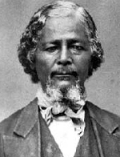

|

|

|
|
|
Also known as "Pap Moses" for his role in the exodus of over 25,000 freed people
from the South to western Kansas in the 1870s, Benjamin Singleton was born a
slave in Nashville, Tennessee. Little is known about the first sixty years of
his life. Singleton evidently escaped from slavery, going first to Canada and
then to Detroit, Michigan where he opened a boardinghouse for ex-slaves. Full of
optimism for African-Americans after the Civil War, Singleton happily returned
to Edgefield, Tennessee in 1865, and supported his family by working as a
carpenter. He quickly assumed a leadership role in the community, and urged
government support of black economic improvement through public schools and land
reform. Singleton desired that African Americans enjoy the kind of independence
that land ownership could bring--the same independence he felt was enjoyed by
the white small farmers of the country. He supported President Grant's efforts
to establish the Republican's Southern base with the help of African American
votes, because he reasoned that political power might speed up the growth of
economic power. Singleton was bitterly disappointed as racism and violence
gripped Tennessee and the South. "The whites had the land and the sense," he
observed, "and the blacks had nothing but freedom."
Determined to make the most out of that freedom, Singleton became convinced
that God had appointed him to lead his people out of the economic bondage of
tenant farming and sharecropping, and the social bondage of discrimination in
the post-war South. He wanted to establish autonomous all-black communities in
the promised land of the west, where so many white migrants were heading in the
1860s and 1870s, and where land was relatively cheap, or even free, thanks to
the Homestead Act of 1862. Kansas, the place where John Brown first came to the
nation's attention in the 1850s, was Singleton's first choice for
African-American migration. In 1873, Singleton took a preliminary trip to Kansas
with several other interested people. Together, they formed the Edgefield Real
Estate and Homestead Association. Fliers and other means of advertisement were
distributed that exhorted African-Americans to buy and settle on land outside
the South. At first hundreds, and then thousands of blacks from Kentucky,
Tennessee, Mississippi and Louisiana filed west with hearts full of hope for a
better future.
The most famous of the settlements was the town of Nicodemus, Kansas.
Singleton himself moved west, and, although he never made much money from the
enterprise, he did begin a national controversy over the migration. White
citizens of Kansas viewed the steady influx of African American pioneers, named
"exodusters", with alarm. So did Southern whites, who worried that the migration
would drain their region of needed laborers and further depress their economy.
Ultimately there was little cause for concern, because the exodus ended abruptly
in the early 1880s when conditions in Kansas fell far short of expectations.
Still, the African-Americans who stuck it out in the west achieved a modest
success. Singleton, called the "Moses of the Colored Exodus," became involved in
Black Nationalist movements. He died in Topeka, Kansas in 1892.
Source: Joan Waugh, ed., Facts on File Encyclopedia of American
History: Civil War and Reconstruction, 1856 to 1869 (New York: Facts on
File, 2003), 327-28.
|